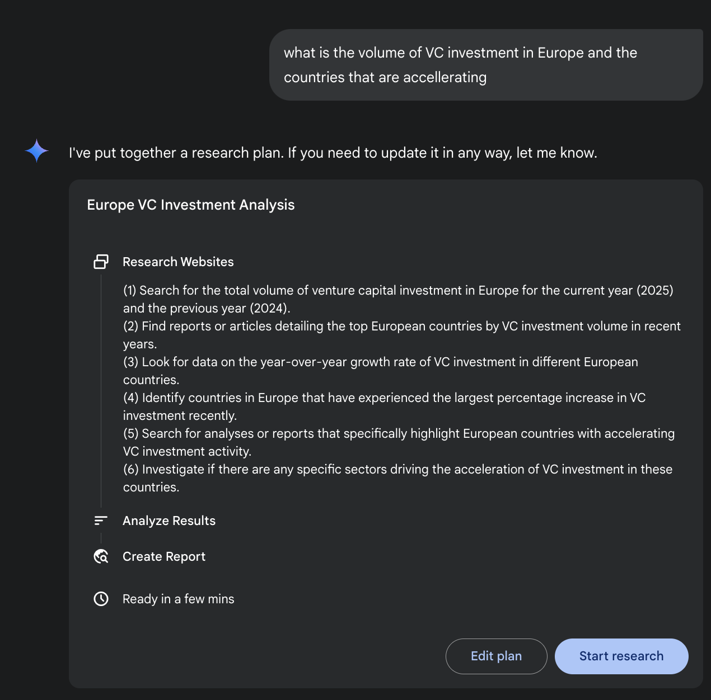
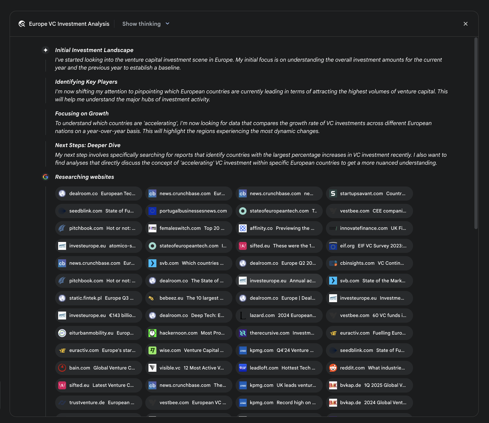
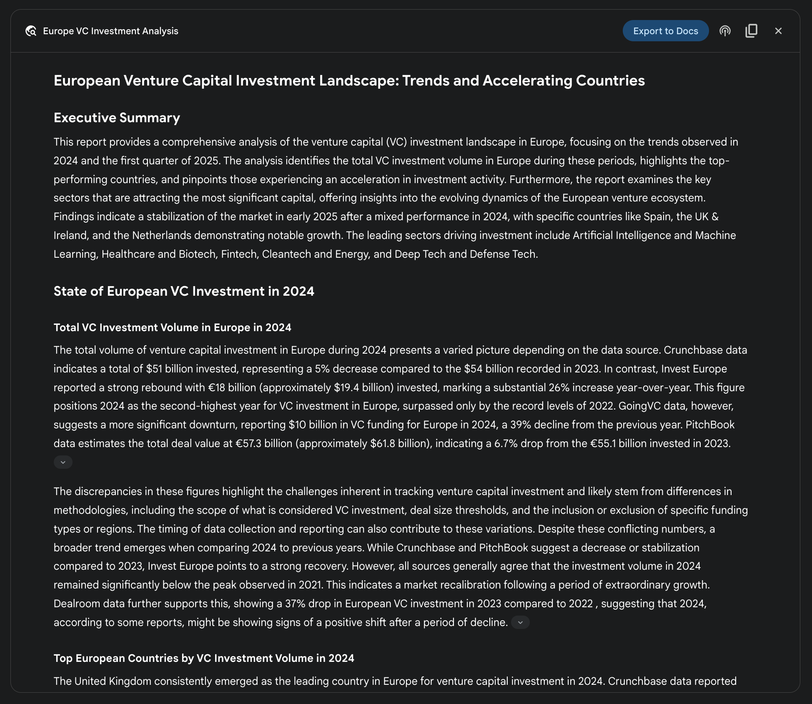
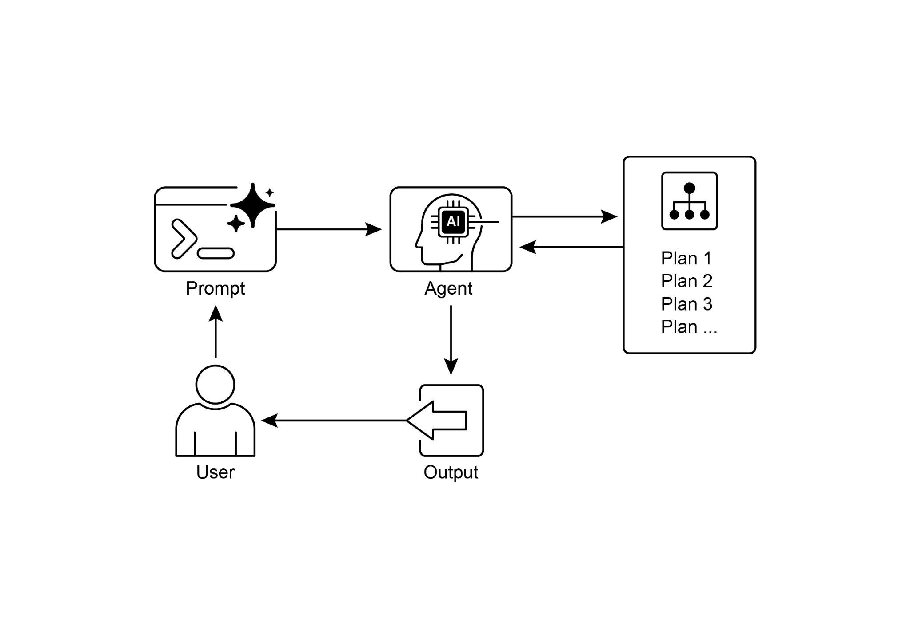

读书 · Agentic Design Patterns · 中英对照
第 6 章 · 规划 Planning
Chapter 6: Planning · 《Agentic Design Patterns》 · Antonio Gulli · 2025
讲智能体如何把复杂目标拆解为可执行步骤序列，并动态调整计划。
← 返回导读 原书 PDF 上一章:第5章 下一章:第7章
本章要点
① 规划是从初始状态到目标状态制定行动序列的能力 ① 计划是起点而非固定脚本，需随新信息动态调整 ① 已知解法时用固定工作流更可靠，需发现how时才用规划 ① LLM可自主生成分步计划，适用于多步依赖任务
本章一图流
目标状态明确起点与终点→规划生成LLM拆解为步骤序列→执行计划按序行动推进→动态调整新信息反馈修正→固定工作流已知解法时更可靠
规划是动态拆解目标为步骤并随反馈调整，已知解法时用固定工作流。
原书插图




本章划线句
划线句(逐字校验)
"At its core, planning is the ability for an agent or a system of agents to formulate a sequence of actions to move from an initial state towards a goal state."
为什么值得划线:定义规划的核心，全章立论基础
划线句(逐字校验)
"An initial plan is merely a starting point, not a rigid script."
为什么值得划线:强调计划的动态适应性，关键思想
划线句(逐字校验)
"does the "how" need to be discovered, or is it already known?"
为什么值得划线:给出是否采用规划智能体的判断标准
正文(英中对照)
第6章：规划（Planning） Chapter 6: Planning
"Intelligent behavior often involves more than just reacting to the immediate input. It requires foresight, breaking down complex tasks into smaller, manageable steps, and strategizing how to achieve a desired outcome. This is where the Planning pattern comes into play. At its core, planning is the ability for an agent or a system of agents to formulate a sequence of actions to move from an initial state towards a goal state. Planning Pattern Overview In the context of AI, it's helpful to think of a planning agent as a specialist to whom you delegate a complex goal. When you ask it to "organize a team offsite," you are defining the what—the objective and its constraints—but not the how."
智能行为往往不只是对即时输入做出反应。它需要前瞻性、将复杂任务分解为更小、可管理的步骤，以及制定如何达成预期结果的策略。这正是规划模式（Planning pattern）发挥作用之处。其核心在于，规划是智能体（agent）或多智能体系统制定一系列动作、从初始状态向目标状态推进的能力。规划模式概述：在 AI 语境下，可以把规划型智能体视为一个专家，你把复杂目标委托给它。当你让它“组织一次团队团建”时，你定义的是做什么——目标及其约束——而不是怎么做。
导读注:点出规划的本质：定义目标而非步骤，把复杂目标委托给规划型智能体。
"The agent's core task is to autonomously chart a course to that goal. It must first understand the initial state (e.g., budget, number of participants, desired dates) and the goal state (a successfully booked offsite), and then discover the optimal sequence of actions to connect them. The plan is not known in advance; it is created in response to the request. A hallmark of this process is adaptability. An initial plan is merely a starting point, not a rigid script. The agent's real power is its ability to incorporate new information and steer the project around obstacles. For instance, if the preferred venue becomes unavailable or a chosen caterer is fully booked, a capable agent doesn't simply fail. It adapts."
Agent 的核心任务是自主规划通往该目标的路径。它必须首先理解初始状态（例如预算、参与人数、期望日期）与目标状态（成功预订的 offsite 场地），然后发现连接二者的最优行动序列。计划并非预先已知，而是针对请求动态创建的。这一过程的一个标志是适应性。初始计划仅是起点，而非僵化的脚本。Agent 的真正能力在于其纳入新信息并引导项目绕过障碍的能力。例如，若首选场地不可用或选定的餐饮供应商已订满，有能力的 Agent 不会直接失败，而是会自适应调整。
导读注:强调 Agent 规划的核心是动态适应，而非执行固定脚本。
"It registers the new constraint, re-evaluates its options, and formulates a new plan, perhaps by suggesting alternative venues or dates. However, it is crucial to recognize the trade-off between flexibility and predictability. Dynamic planning is a specific tool, not a universal solution. When a problem's solution is already well-understood and repeatable, constraining the agent to a predetermined, fixed workflow is more effective. This approach limits the agent's autonomy to reduce uncertainty and the risk of unpredictable behavior, guaranteeing a reliable and consistent outcome."
它记录新约束、重新评估其选项，并制定新计划，或许通过建议替代场地或日期来实现。然而，认识到灵活性与可预测性之间的权衡至关重要。动态规划是一种特定工具，而非通用解决方案。当问题的解决方案已被充分理解且可重复时，将 agent 约束到预先确定的固定工作流会更有效。这种方法限制 agent 的自主性，以减少不确定性和不可预测行为的风险，从而保证可靠且一致的结果。
导读注:点出动态规划并非万能，需在灵活性与可预测性间权衡。
"Therefore, the decision to use a planning agent versus a simple task-execution agent hinges on a single question: does the "how" need to be discovered, or is it already known? Practical Applications & Use Cases The Planning pattern is a core computational process in autonomous systems, enabling an agent to synthesize a sequence of actions to achieve a specified goal, 1 particularly within dynamic or complex environments. This process transforms a high-level objective into a structured plan composed of discrete, executable steps. In domains such as procedural task automation, planning is used to orchestrate complex workflows."
因此，选择使用规划型 agent（planning agent）还是简单的任务执行型 agent（task-execution agent），取决于一个单一问题：“如何做”是需要被发现的，还是已经已知的？实际应用与用例 规划模式（Planning pattern）是自主系统中的核心计算过程，使 agent 能够综合出一系列动作以实现指定目标，尤其是在动态或复杂环境中。该过程将高层目标转化为由离散、可执行步骤构成的结构化计划。在流程化任务自动化等领域，规划被用于编排复杂的工作流。
导读注:关键判断标准：“如何做”是否已知，决定用规划型还是执行型 agent。
"For example, a business process like onboarding a new employee can be decomposed into a directed sequence of sub-tasks, such as creating system accounts, assigning training modules, and coordinating with different departments. The agent generates a plan to execute these steps in a logical order, invoking necessary tools or interacting with various systems to manage dependencies. Within robotics and autonomous navigation, planning is fundamental for state-space traversal. A system, whether a physical robot or a virtual entity, must generate a path or sequence of actions to transition from an initial state to a goal state."
例如，像新员工入职这样的业务流程可以分解为一系列有向的子任务，例如创建系统账户、分配培训模块以及与不同部门协调。agent 会生成一个计划，以逻辑顺序执行这些步骤，调用必要的工具或与各种系统交互以管理依赖关系。在机器人技术和自主导航中，规划对于状态空间遍历是基础性的。一个系统，无论是物理机器人还是虚拟实体，都必须生成一条路径或动作序列，以从初始状态过渡到目标状态。
导读注:展示规划在业务流程与机器人导航中的共性：分解任务并生成有序执行路径。
"This involves optimizing for metrics such as time or energy consumption while adhering to environmental constraints, like avoiding obstacles or following traffic regulations. This pattern is also critical for structured information synthesis. When tasked with generating a complex output like a research report, an agent can formulate a plan that includes distinct phases for information gathering, data summarization, content structuring, and iterative refinement. Similarly, in customer support scenarios involving multi-step problem resolution, an agent can create and follow a systematic plan for diagnosis, solution implementation, and escalation."
这涉及在遵守环境约束（如避开障碍物或遵守交通法规）的同时，针对时间或能耗等指标进行优化。该模式对于结构化信息综合也至关重要。当任务要求生成复杂输出（如研究报告）时，智能体（agent）可以制定一个计划，其中包含信息收集、数据总结、内容结构化和迭代优化的不同阶段。同样，在涉及多步骤问题解决的客户支持场景中，智能体可以创建并遵循一个系统化计划，用于诊断、解决方案实施和升级处理。
导读注:规划模式不仅用于优化时间/能耗，更是结构化信息综合与多步骤问题解决的关键。
"In essence, the Planning pattern allows an agent to move beyond simple, reactive actions to goal-oriented behavior. It provides the logical framework necessary to solve problems that require a coherent sequence of interdependent operations. Hands-on code (Crew AI) The following section will demonstrate an implementation of the Planner pattern using the Crew AI framework. This pattern involves an agent that first formulates a multi-step plan to address a complex query and then executes that plan sequentially."
本质上，Planning 模式让 agent 超越简单的反应式动作，转向目标导向的行为。它提供了解决那些需要一系列相互依赖操作连贯执行的问题所必需的逻辑框架。动手代码（Crew AI）下一节将演示使用 Crew AI 框架实现 Planner 模式。该模式涉及一个 agent，它首先制定多步计划以处理复杂查询，然后按顺序执行该计划。
导读注:点明 Planning 模式的核心价值：从反应式到目标导向，并预告 Crew AI 实战。
python
import os
from dotenv import load_dotenv
from crewai import Agent, Task, Crew, Process
from langchain_openai import ChatOpenAIpython
# Load environment variables from .env file for security
load_dotenv()python
# 1. Explicitly define the language model for clarity
llm = ChatOpenAI(model="gpt-4-turbo")"# 2. Define a clear and focused agent planner_writer_agent = Agent( role='Article Planner and Writer', goal='Plan and then write a concise, engaging summary on a specified topic.', backstory=( 'You are an expert technical writer and content strategist. ' 'Your strength lies in creating a clear, actionable plan before writing, ' 'ensuring the final summary is both informative and easy to digest.' ), verbose=True, allow_delegation=False, llm=llm # Assign the specific LLM to the agent ) # 3. Define a task with a more structured and specific expected output topic = "The importance of Reinforcement Learning in AI" high_level_task = Task( description=( f"1. Create a bullet-point plan for a summary on the topic: '{topic}'.\n" f"2."
# 2. 定义一个清晰且聚焦的 agent planner_writer_agent = Agent( role='文章规划与撰写者', goal='针对指定主题进行规划，然后撰写一份简洁、引人入胜的摘要。', backstory=( '你是一位资深技术写作专家与内容策略师。' '你的优势在于在写作前制定清晰、可执行的计划，' '确保最终摘要既信息充分又易于理解。' ), verbose=True, allow_delegation=False, llm=llm # 将特定的 LLM 分配给该 agent ) # 3. 定义一个具有更结构化、更具体预期输出的任务 topic = "强化学习在 AI 中的重要性" high_level_task = Task( description=( f"1. 为关于主题：'{topic}' 的摘要创建一份要点式计划。\n" f"2.
导读注:展示如何用 Agent 与 Task 定义规划-写作流程，结构化预期输出是关键。
"Write the summary based on your plan, keeping it around 200 words." ), expected_output=( "A final report containing two distinct sections:\n\n" "### Plan\n" "- A bulleted list outlining the main points of the summary.\n\n" "### Summary\n" "- A concise and well-structured summary of the topic." ), agent=planner_writer_agent, ) # Create the crew with a clear process crew = Crew( agents=[planner_writer_agent], tasks=[high_level_task], process=Process.sequential, 3 )"
根据你的计划撰写摘要，保持在约 200 词左右。" ), expected_output=( "一份包含两个不同部分的最终报告：\n\n" "### Plan\n" "- 一个列出摘要要点的项目符号列表。\n\n" "### Summary\n" "- 对该主题简明且结构良好的摘要。" ), agent=planner_writer_agent, ) # 以清晰的流程创建 crew crew = Crew( agents=[planner_writer_agent], tasks=[high_level_task], process=Process.sequential, 3 )
导读注:展示 CrewAI 中任务描述、期望输出与顺序流程的配置写法。
python
# Execute the task
print("## Running the planning and writing task ##")
result = crew.kickoff()python
print("\n\n---\n## Task Result ##\n---")
print(result)"This code uses the CrewAI library to create an AI agent that plans and writes a summary on a given topic. It starts by importing necessary libraries, including Crew.ai and langchain_openai, and loading environment variables from a .env file. A ChatOpenAI language model is explicitly defined for use with the agent. An Agent named planner_writer_agent is created with a specific role and goal: to plan and then write a concise summary. The agent's backstory emphasizes its expertise in planning and technical writing. A Task is defined with a clear description to first create a plan and then write a summary on the topic "The importance of Reinforcement Learning in AI", with a specific format for the expected output."
这段代码使用 CrewAI 库创建一个 AI agent（智能体），用于针对给定主题进行规划并撰写摘要。它首先导入必要的库，包括 Crew.ai 和 langchain_openai，并从 .env 文件加载环境变量。代码显式定义了一个 ChatOpenAI 语言模型供该 agent 使用。随后创建了一个名为 planner_writer_agent 的 Agent，赋予其特定角色与目标：先进行规划，再撰写一份简洁的摘要。该 agent 的背景故事强调了其在规划与技术写作方面的专长。接着定义了一个 Task，其描述明确要求先制定计划，再就主题 "The importance of Reinforcement Learning in AI" 撰写摘要，并为预期输出指定了特定格式。
导读注:展示如何用 CrewAI 定义 agent 与 task，角色、目标、背景故事三要素是构建 agent 的关键。
"A Crew is assembled with the agent and task, set to process them sequentially. Finally, the crew.kickoff() method is called to execute the defined task and the result is printed. Google DeepResearch Google Gemini DeepResearch (see Fig.1) is an agent-based system designed for autonomous information retrieval and synthesis. It functions through a multi-step agentic pipeline that dynamically and iteratively queries Google Search to systematically explore complex topics. The system is engineered to process a large corpus of web-based sources, evaluate the collected data for relevance and knowledge gaps, and perform subsequent searches to address them."
一个 Crew 由 agent 和 task 组装而成，设置为按顺序处理它们。最后，调用 crew.kickoff() 方法来执行定义的任务并打印结果。Google DeepResearch Google Gemini DeepResearch（见图1）是一个基于 agent 的系统，专为自主信息检索与综合而设计。它通过多步 agentic pipeline 运行，动态且迭代地查询 Google Search，以系统地探索复杂主题。该系统旨在处理大量基于网络的来源语料库，评估收集到的数据的相关性和知识缺口，并执行后续搜索以解决这些缺口。
导读注:介绍 Crew 执行流程与 Gemini DeepResearch 的多步 agentic pipeline。
"The final output consolidates the vetted information into a structured, multi-page summary with citations to the original sources. Expanding on this, the system's operation is not a single query-response event but a managed, long-running process. It begins by deconstructing a user's prompt into a multi-point research plan (see Fig. 1), which is then presented to the user for review and modification. This allows for a collaborative shaping of the research trajectory before execution. Once the plan is approved, the agentic pipeline initiates its iterative search-and-analysis loop."
最终输出将经过审核的信息整合为一份结构化、多页的摘要，并附上原始来源的引用。进一步而言，系统的运行并非单次查询-响应事件，而是一个受管理的长期运行过程。它首先将用户的 prompt 拆解为一份多点研究计划（见图 1），随后呈现给用户以供审阅和修改。这使得在执行之前能够协作式地塑造研究轨迹。一旦计划获批，agentic pipeline 便启动其迭代式搜索与分析循环。
导读注:强调系统是长期受管流程而非单次问答，用户可协作调整研究计划。
"This involves more than just executing a series of predefined searches; the agent dynamically formulates and refines its queries based on the 4 information it gathers, actively identifying knowledge gaps, corroborating data points, and resolving discrepancies. Fig. 1: Google Deep Research agent generating an execution plan for using Google Search as a tool. A key architectural component is the system's ability to manage this process asynchronously. This design ensures that the investigation, which can involve analyzing hundreds of sources, is resilient to single-point failures and allows the user to disengage and be notified upon completion."
这不仅仅是执行一系列预定义的搜索；agent 会根据其收集到的 4 条信息动态地制定和优化查询，主动识别知识缺口、印证数据点并解决差异。图 1：Google Deep Research agent 生成使用 Google Search 作为工具的执行计划。一个关键的架构组件是系统异步管理该过程的能力。这种设计确保调查（可能涉及分析数百个来源）对单点故障具有韧性，并允许用户脱离操作，在完成时收到通知。
导读注:强调 agent 动态查询与异步架构，可容错且支持用户离线等待。
"The system can also integrate 5 user-provided documents, combining information from private sources with its web-based research. The final output is not merely a concatenated list of findings but a structured, multi-page report. During the synthesis phase, the model performs a critical evaluation of the collected information, identifying major themes and organizing the content into a coherent narrative with logical sections. The report is designed to be interactive, often including features like an audio overview, charts, and links to the original cited sources, allowing for verification and further exploration by the user."
该系统还可整合 5 份用户提供的文档，将来自私有来源的信息与其基于网络的研究相结合。最终输出并非仅仅是研究结果的拼接列表，而是一份结构化的多页报告。在综合阶段，模型会对收集到的信息进行批判性评估，识别主要主题，并将内容组织成具有逻辑分节的连贯叙述。该报告被设计为交互式的，通常包含音频概览、图表以及指向原始引用来源的链接等功能，便于用户核实与进一步探索。
导读注:综合阶段的批判性评估与交互式报告设计，是该系统的关键亮点。
"In addition to the synthesized results, the model explicitly returns the full list of sources it searched and consulted (see Fig.2). These are presented as citations, providing complete transparency and direct access to the primary information. This entire process transforms a simple query into a comprehensive, synthesized body of knowledge. 6 Fig. 2: An example of Deep Research plan being executed, resulting in Google Search being used as a tool to search various web sources. By mitigating the substantial time and resource investment required for manual data acquisition and synthesis, Gemini DeepResearch provides a more structured and exhaustive method for information discovery."
除了合成结果之外，模型还明确返回其搜索和查阅的完整来源列表（见图2）。这些来源以引用形式呈现，提供完全的透明度以及对原始信息的直接访问。整个流程将一次简单的查询转化为全面、综合的知识体系。6 图2：Deep Research 计划执行示例，最终使用 Google Search 作为工具搜索各类网络来源。通过减少人工数据获取与综合所需的大量时间和资源投入，Gemini DeepResearch 为信息发现提供了一种更结构化、更详尽的方法。
导读注:强调来源透明可追溯，并点出该工具以结构化方式降低人工调研成本。
"The system's value is particularly evident in complex, multi-faceted research tasks across various domains. For instance, in competitive analysis, the agent can be directed to systematically gather and collate data on market trends, competitor product specifications, public sentiment from diverse online sources, and marketing strategies. This automated process replaces the laborious task of manually tracking multiple competitors, allowing analysts to focus on higher-order strategic interpretation rather than data collection (see Fig. 3). 7 Fig. 3: Final output generated by the Google Deep Research agent, analyzing on our behalf sources obtained using Google Search as a tool."
该系统的价值在跨领域的复杂、多层面研究任务中尤为明显。例如，在竞争分析中，可以指示该 agent（智能体）系统地收集和整理关于市场趋势、竞争对手产品规格、来自多种在线来源的公众情绪以及营销策略的数据。这一自动化流程取代了手动跟踪多个竞争对手的繁重任务，使分析师能够专注于更高层次的战略解读，而非数据收集（见图 3）。7 图 3：Google Deep Research agent 生成的最终输出，代表我们分析使用 Google Search 作为工具所获得的来源。
导读注:突出 agent 自动化替代人工数据收集，让分析师专注战略解读。
"Similarly, in academic exploration, the system serves as a powerful tool for conducting extensive literature reviews. It can identify and summarize foundational papers, trace the development of concepts across numerous publications, and map out emerging research fronts within a specific field, thereby accelerating the initial and most time-consuming phase of academic inquiry. The efficiency of this approach stems from the automation of the iterative search-and-filter cycle, which is a core bottleneck in manual research. Comprehensiveness is achieved by the system's capacity to process a larger volume and variety of information sources than is typically feasible for a human researcher within a comparable timeframe."
同样，在学术探索中，该系统可作为开展广泛文献综述的强大工具。它能够识别并总结基础性论文，追踪概念在众多出版物中的发展脉络，并勾勒出某一特定领域内新兴的研究前沿，从而加速学术探究中最初且最耗时的阶段。这种方法的效率源于对迭代式搜索与筛选循环的自动化，而这正是人工研究中的核心瓶颈。全面性的实现，则得益于系统能够在可比时间范围内处理比人类研究者通常所能处理的更大规模和更多种类的信息源。
导读注:系统自动化文献综述的搜索筛选循环，突破人工研究瓶颈，实现全面性。
"This broader scope of analysis helps to reduce the potential for selection bias and increases the likelihood of uncovering less obvious but potentially critical information, leading to a more robust and well-supported understanding of the subject matter. OpenAI Deep Research API The OpenAI Deep Research API is a specialized tool designed to automate complex research tasks. It utilizes an advanced, agentic model that can independently reason, plan, and synthesize information from real-world sources. Unlike a simple Q&A model, it takes a high-level query and autonomously breaks it down into sub-questions, performs web searches using its built-in tools, and delivers a structured, citation-rich final report."
这种更广泛的分析范围有助于降低选择偏差(selection bias)的可能性,并提高发现不那么明显但可能至关重要的信息的概率,从而对研究对象形成更稳健、更有充分支撑的理解。OpenAI Deep Research API 是一个专为自动化复杂研究任务而设计的专用工具。它采用先进的智能体模型(agentic model),能够独立推理、规划并综合来自真实世界来源的信息。与简单的问答模型不同,它接收一个高层次查询,自主将其分解为子问题,使用内置工具执行网络搜索,并交付一份结构化、引用丰富的最终报告。
导读注:智能体式研究能自主拆解问题、检索并生成带引用的报告,区别于普通问答。
"The API provides direct programmatic access to this entire process, using at the time of writing models like o3-deep-research-2025-06-26 for high-quality synthesis and the faster o4-mini-deep-research-2025-06-26 for latency-sensitive application The Deep Research API is useful because it automates what would otherwise be hours of manual research, delivering professional-grade, data-driven reports suitable for informing business strategy, investment decisions, or policy recommendations."
该 API 通过程序化方式直接访问整个流程，在撰写本文时使用诸如 o3-deep-research-2025-06-26 等模型进行高质量综合，并使用更快的 o4-mini-deep-research-2025-06-26 应对延迟敏感型应用。Deep Research API 的价值在于自动化原本需要数小时的人工研究，交付专业级、数据驱动的报告，适用于为商业战略、投资决策或政策建议提供依据。
导读注:点出 API 的核心价值：把数小时人工研究自动化，产出专业级数据驱动报告。
"Its key benefits include: ● Structured, Cited Output: It produces well-organized reports with inline citations linked to source metadata, ensuring claims are verifiable and data-backed. 8 ● Transparency: Unlike the abstracted process in ChatGPT, the API exposes all intermediate steps, including the agent's reasoning, the specific web search queries it executed, and any code it ran. This allows for detailed debugging, analysis, and a deeper understanding of how the final answer was constructed. ● Extensibility: It supports the Model Context Protocol (MCP), enabling developers to connect the agent to private knowledge bases and internal data sources, blending public web research with proprietary information."
其主要优势包括：● 结构化、带引用的输出：它生成组织良好的报告，并带有链接到源元数据的内联引用，确保各项主张可验证且有数据支撑。8 ● 透明性：与 ChatGPT 中被抽象化的过程不同，该 API 暴露所有中间步骤，包括智能体的推理过程、其执行的具体网络搜索查询以及其运行的任何代码。这允许进行详细调试、分析，并更深入地理解最终答案是如何构建的。● 可扩展性：它支持模型上下文协议（Model Context Protocol, MCP），使开发者能够将智能体连接到私有知识库和内部数据源，将公共网络研究与专有信息融合。
导读注:突出该 API 的透明性：暴露推理、搜索查询与代码，便于调试与理解。
"To use the API, you send a request to the client.responses.create endpoint, specifying a model, an input prompt, and the tools the agent can use. The input typically includes a system_message that defines the agent's persona and desired output format, along with the user_query. You must also include the web_search_preview tool and can optionally add others like code_interpreter or custom MCP tools (see Chapter 10) for internal data. from openai import OpenAI"
要使用该 API，需向 client.responses.create 端点发送请求，指定模型、输入 prompt 以及 agent 可使用的工具。输入通常包含一个 system_message（定义 agent 的人设与期望输出格式）以及 user_query。你还必须包含 web_search_preview 工具，并可选地添加其他工具，如 code_interpreter 或用于内部数据的自定义 MCP 工具（见第 10 章）。from openai import OpenAI
导读注:点明调用 API 的三要素：模型、prompt、工具，并强调 web_search_preview 为必选。
python
# Initialize the client with your API key
client = OpenAI(api_key="YOUR_OPENAI_API_KEY")"# Define the agent's role and the user's research question system_message = """You are a professional researcher preparing a structured, data-driven report. Focus on data-rich insights, use reliable sources, and include inline citations.""" user_query = "Research the economic impact of semaglutide on global healthcare systems." # Create the Deep Research API call response = client.responses.create( model="o3-deep-research-2025-06-26", input=[ { "role": "developer", "content": [{"type": "input_text", "text": system_message}] }, { "role": "user", "content": [{"type": "input_text", "text": user_query}] } ], reasoning={"summary": "auto"}, tools=[{"type": "web_search_preview"}] ) 9"
# 定义 agent 的角色与用户的研究问题
system_message = """你是一名专业研究员，负责撰写结构化、数据驱动的报告。专注于数据丰富的洞察，使用可靠来源，并包含行内引用。"""
user_query = "研究 semaglutide（司美格鲁肽）对全球医疗系统的经济影响。"
# 创建 Deep Research API 调用
response = client.responses.create(
model="o3-deep-research-2025-06-26",
input=[
{
"role": "developer",
"content": [{"type": "input_text", "text": system_message}]
},
{
"role": "user",
"content": [{"type": "input_text", "text": user_query}]
}
],
reasoning={"summary": "auto"},
tools=[{"type": "web_search_preview"}]
)
导读注:示例展示如何用 Deep Research API 发起带联网搜索的研究调用。
python
# Access and print the final report from the response
final_report = response.output[-1].content[0].text
print(final_report)python
# --- ACCESS INLINE CITATIONS AND METADATA --print("--- CITATIONS ---")
annotations = response.output[-1].content[0].annotationspython
if not annotations:
print("No annotations found in the report.")
else:
for i, citation in enumerate(annotations):
# The text span the citation refers to
cited_text =
final_report[citation.start_index:citation.end_index]python
print(f"Citation {i+1}:")
print(f" Cited Text: {cited_text}")
print(f" Title: {citation.title}")
print(f" URL: {citation.url}")
print(f" Location: chars
{citation.start_index}–{citation.end_index}")
print("\n" + "="*50 + "\n")"# --- INSPECT INTERMEDIATE STEPS --print("--- INTERMEDIATE STEPS ---")"
# --- 检查中间步骤 --print("--- 中间步骤 ---")
导读注:检查中间步骤是调试与验证流程的关键环节。
python
# 1. Reasoning Steps: Internal plans and summaries generated by the
model.
try:
reasoning_step = next(item for item in response.output if
item.type == "reasoning")
print("\n[Found a Reasoning Step]")
for summary_part in reasoning_step.summary:
print(f" - {summary_part.text}")
except StopIteration:
print("\nNo reasoning steps found.")python
# 2. Web Search Calls: The exact search queries the agent executed.
try:
search_step = next(item for item in response.output if item.type
== "web_search_call")
print("\n[Found a Web Search Call]")
print(f" Query Executed: '{search_step.action['query']}'")
print(f" Status: {search_step.status}")
except StopIteration:"10 print("\nNo web search steps found.")"
10 print("\nNo web search steps found.")
导读注:代码片段，原样保留，注意转义字符。
python
# 3. Code Execution: Any code run by the agent using the code
interpreter.
try:
code_step = next(item for item in response.output if item.type ==
"code_interpreter_call")
print("\n[Found a Code Execution Step]")
print(" Code Input:")
print(f" ```python\n{code_step.input}\n ```")
print(" Code Output:")
print(f" {code_step.output}")
except StopIteration:
print("\nNo code execution steps found.")"This code snippet utilizes the OpenAI API to perform a "Deep Research" task. It starts by initializing the OpenAI client with your API key, which is crucial for authentication. Then, it defines the role of the AI agent as a professional researcher and sets the user's research question about the economic impact of semaglutide. The code constructs an API call to the o3-deep-research-2025-06-26 model, providing the defined system message and user query as input. It also requests an automatic summary of the reasoning and enables web search capabilities. After making the API call, it extracts and prints the final generated report."
这段代码利用 OpenAI API 执行一项“深度研究”(Deep Research)任务。它首先用你的 API key 初始化 OpenAI 客户端,这对身份认证至关重要。然后,它将 AI agent 的角色定义为专业研究员,并设置用户关于 semaglutide 经济影响的研究问题。代码构造了一次对 o3-deep-research-2025-06-26 模型的 API 调用,将定义好的 system message 和用户查询作为输入提供。它还请求对推理过程进行自动摘要,并启用网络搜索能力。发起 API 调用后,它提取并打印最终生成的报告。
导读注:展示如何用 o3-deep-research 模型搭建带网络搜索的深度研究 agent。
"Subsequently, it attempts to access and display inline citations and metadata from the report's annotations, including the cited text, title, URL, and location within the report. Finally, it inspects and prints details about the intermediate steps the model took, such as reasoning steps, web search calls (including the query executed), and any code execution steps if a code interpreter was used. At a Glance What: Complex problems often cannot be solved with a single action and require foresight to achieve a desired outcome. Without a structured approach, an agentic system struggles to handle multifaceted requests that involve multiple steps and dependencies."
随后，它尝试访问并显示报告注释中的行内引用（inline citations）和元数据，包括被引用的文本、标题、URL 以及在报告中的位置。最后，它检查并打印模型所采取的中间步骤的详细信息，例如推理步骤、网络搜索调用（包括执行的查询），以及在使用代码解释器（code interpreter）时的任何代码执行步骤。概览 是什么：复杂问题往往无法通过单一操作解决，并且需要前瞻性（foresight）才能达成预期结果。如果没有结构化的方法，智能体系统（agentic system）就难以处理涉及多个步骤和依赖关系的多方面请求。
导读注:揭示智能体处理复杂任务时需结构化方法，并展示其内部推理与工具调用细节。
"This makes it difficult to break down high-level objectives into a manageable series of smaller, executable tasks. Consequently, the system fails to strategize effectively, leading to incomplete or incorrect results when faced with intricate goals. 11 Why: The Planning pattern offers a standardized solution by having an agentic system first create a coherent plan to address a goal. It involves decomposing a high-level objective into a sequence of smaller, actionable steps or sub-goals. This allows the system to manage complex workflows, orchestrate various tools, and handle dependencies in a logical order. LLMs are particularly well-suited for this, as they can generate plausible and effective plans based on their vast training data."
这使得将高层目标拆解为一系列可管理、可执行的更小任务变得困难。因此，系统无法有效制定策略，在面对复杂目标时导致结果不完整或不正确。11 为什么：规划（Planning）模式提供了一种标准化解决方案，让智能体系统首先制定一个连贯的计划来应对目标。它涉及将高层目标分解为一系列更小、可操作的步骤或子目标。这使系统能够管理复杂工作流、编排各种工具，并按逻辑顺序处理依赖关系。LLM 尤其适合这一点，因为它们能够基于庞大的训练数据生成合理且有效的计划。
导读注:点出规划模式如何通过拆解目标解决复杂任务编排难题。
"This structured approach transforms a simple reactive agent into a strategic executor that can proactively work towards a complex objective and even adapt its plan if necessary. Rule of thumb: Use this pattern when a user's request is too complex to be handled by a single action or tool. It is ideal for automating multi-step processes, such as generating a detailed research report, onboarding a new employee, or executing a competitive analysis. Apply the Planning pattern whenever a task requires a sequence of interdependent operations to reach a final, synthesized outcome. Visual summary Fig.4; Planning design pattern 12"
这种结构化方法将简单的反应式 agent（智能体）转变为战略执行者，能够主动朝着复杂目标推进，甚至在必要时调整其计划。经验法则：当用户请求过于复杂、无法由单一动作或工具处理时，使用该模式。它非常适合自动化多步骤流程，例如生成详细的研究报告、为新员工办理入职，或执行竞争分析。只要任务需要一系列相互依赖的操作才能达成最终的综合结果，就应应用 Planning（规划）模式。可视化摘要 图4；Planning 设计模式 12
导读注:点出 Planning 模式的适用边界：任务复杂到单一动作无法完成时才启用。
关键要点 Key Takeaways
"● Planning enables agents to break down complex goals into actionable, sequential steps. ● It is essential for handling multi-step tasks, workflow automation, and navigating complex environments. ● LLMs can perform planning by generating step-by-step approaches based on task descriptions. ● Explicitly prompting or designing tasks to require planning steps encourages this behavior in agent frameworks. ● Google Deep Research is an agent analyzing on our behalf sources obtained using Google Search as a tool. It reflects, plans, and executes Conclusion In conclusion, the Planning pattern is a foundational component that elevates agentic systems from simple reactive responders to strategic, goal-oriented executors."
● Planning（规划）使 agent 能够将复杂目标分解为可执行的、按顺序排列的步骤。● 它对于处理多步骤任务、工作流自动化以及在复杂环境中导航至关重要。● LLM 可以基于任务描述生成逐步方法，从而执行规划。● 显式地通过 prompt 提示或设计需要规划步骤的任务，可以鼓励 agent 框架中表现出这种行为。● Google Deep Research 是一个 agent，它代表我们分析通过将 Google Search 作为工具获取的来源。它会进行 Reflection（反思）、规划并执行。结论 总之，Planning 模式是一个基础组件，它将 agentic 系统从简单的反应式响应者提升为战略性的、目标导向的执行者。
导读注:强调 Planning 是 agent 从被动响应升级为目标导向执行者的关键模式。
"Modern large language models provide the core capability for this, autonomously decomposing high-level objectives into coherent, actionable steps. This pattern scales from straightforward, sequential task execution, as demonstrated by the CrewAI agent creating and following a writing plan, to more complex and dynamic systems. The Google DeepResearch agent exemplifies this advanced application, creating iterative research plans that adapt and evolve based on continuous information gathering. Ultimately, planning provides the essential bridge between human intent and automated execution for complex problems."
现代大型语言模型（LLM）为此提供了核心能力，能够自主将高层目标分解为连贯、可执行的步骤。这一模式可从简单的顺序任务执行（如 CrewAI agent 创建并遵循写作计划所示）扩展到更复杂、动态的系统。Google DeepResearch agent 体现了这种高级应用，它创建迭代研究计划，并基于持续的信息收集进行适应和演化。最终，规划为复杂问题在人类意图与自动化执行之间提供了关键桥梁。
导读注:点出 LLM 规划能力从简单顺序执行到动态迭代系统的演进，规划是意图到执行的关键桥梁。
"By structuring a problem-solving approach, this pattern enables agents to manage intricate workflows and deliver comprehensive, synthesized results."
通过构建一种问题解决的方法，该模式使智能体（agent）能够管理复杂的工作流，并交付全面、综合的结果。
导读注:强调结构化问题解决如何让智能体驾驭复杂工作流并产出综合结果。
参考文献 References
"1. Google DeepResearch (Gemini Feature): gemini.google.com 2. OpenAI ,Introducing deep research https://openai.com/index/introducing-deep-research/ 3. Perplexity, Introducing Perplexity Deep Research, https://www.perplexity.ai/hub/blog/introducing-perplexity-deep-research 13"
1. Google DeepResearch（Gemini 功能）：gemini.google.com 2. OpenAI，《Introducing deep research》https://openai.com/index/introducing-deep-research/ 3. Perplexity，《Introducing Perplexity Deep Research》https://www.perplexity.ai/hub/blog/introducing-perplexity-deep-research 13
导读注:三家主流厂商的 Deep Research 功能与官方链接汇总，便于对照查阅。
来源与用途
《Agentic Design Patterns》,Antonio Gulli · 2025 · 原书 PDF。本页为学习用途的对照整理,版权归原作者;有问题到读书导师处提问,答案只引用书中原文并标注章节。
← 第5章 · 工具使用 Tool Use (Function Calling) 导读 第7章 · 多智能体协作 Multi-Agent Collaboration →